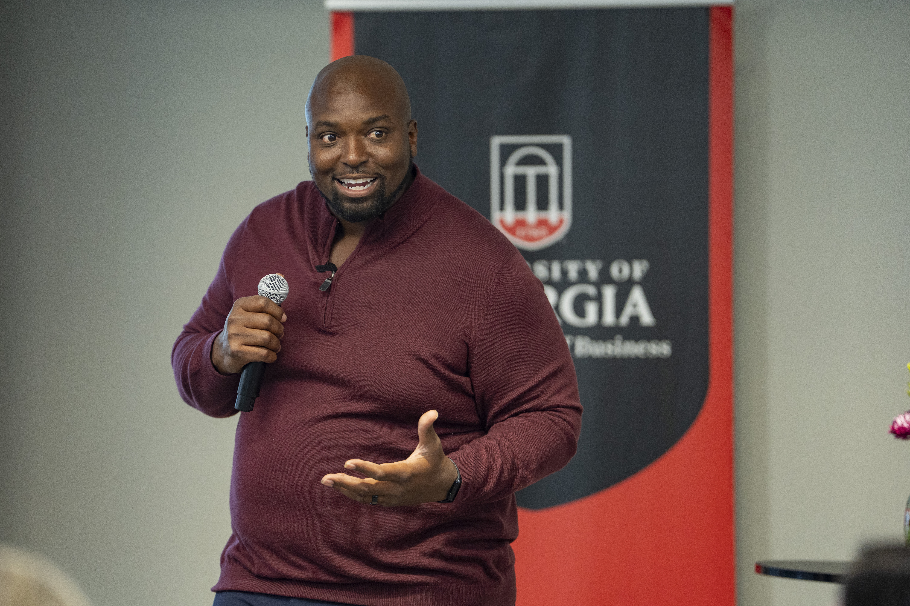
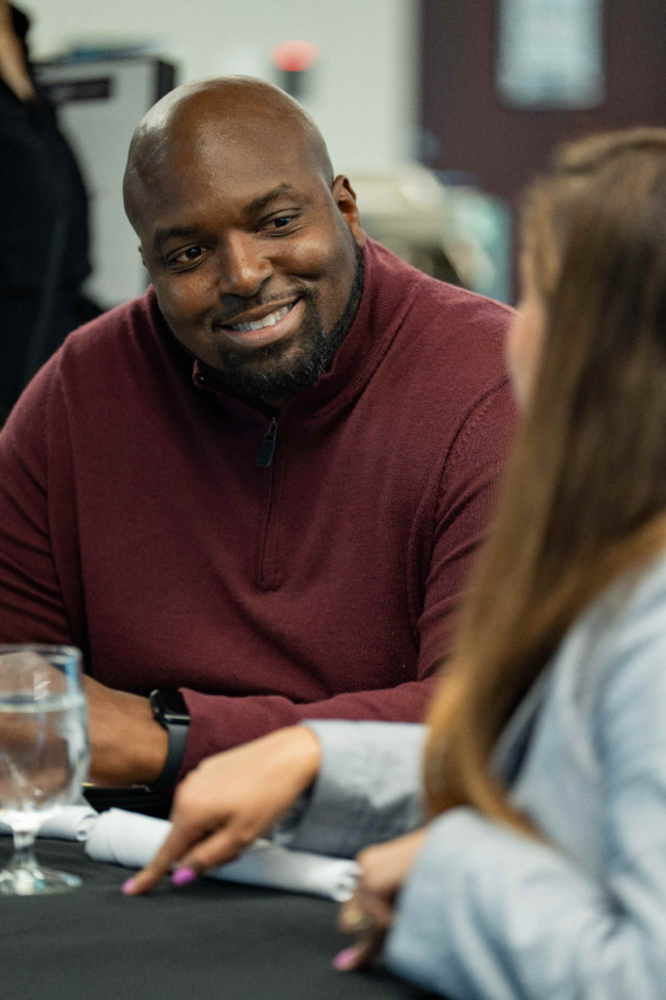
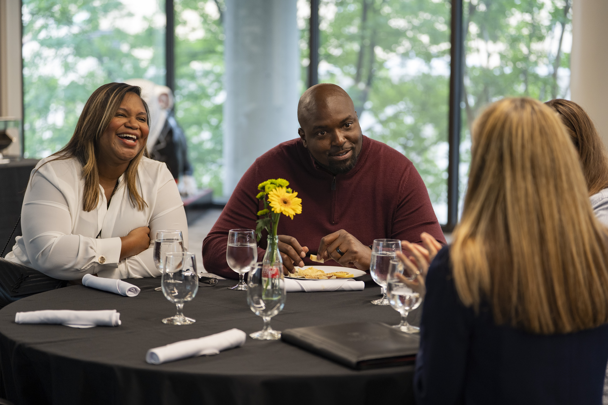
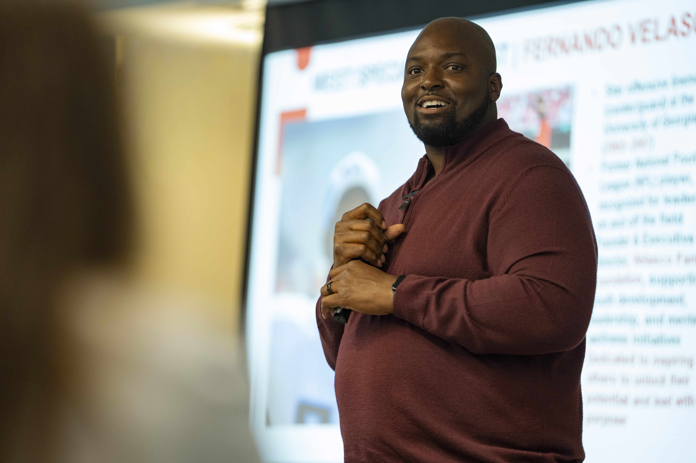

I KNEW HOW TO PERFORM LONG BEFORE I KNEW HOW TO BE HONEST.
Fernando Velasco is a nine-year NFL veteran, TEDx speaker, former NFL Director of Player Engagement, mental health advocate, and founder of the Velasco Family Foundation.
The Story
Football taught Fernando discipline, toughness, preparation, and what it takes to compete at the highest level. He spent nine years in the NFL, then moved into player development, helping athletes navigate identity, transition, family, pressure, and life away from the field.
For years, he could help other people have difficult conversations while still avoiding some of his own.
In 2020, Fernando was diagnosed with Bipolar I after a manic episode and a seven-day psychiatric hospitalization. It became one of the clearest examples of something he understands deeply today: a person can look successful on the outside while carrying something very different underneath.
He kept building. He kept leading. He kept learning. But his understanding of strength began to change.
Later, during another difficult season, someone asked him a simple question: "Fernando, how are you doing?"
This time, he answered honestly.
Fernando does not believe vulnerability means lowering the standard. He believes people perform better and live healthier when truth, help, systems, and identity are treated as strengths.
That belief became M.A.S.K.


Why Fernando
He has lived high performance and led high performers. He knows the pressure of being on the field and the responsibility of helping others succeed off it.
His work brings together lived experience, player development, mental health advocacy, and doctoral study in learning and human development.
"Not from a football field alone. Not from a textbook alone. From years inside high-performance environments, sitting across from people when the cameras were not around."
Credentials & Experience
9-Year NFL Veteran
Tested at the highest level of athletic competition and leadership.
Former NFL Director
Led Player Engagement for collegiate and professional athletes.
TEDx Speaker
Global platform advocate speaking from direct lived experience.
Doctoral Student
Studying learning, leadership, and human development.
Foundation Founder
Founder of the Velasco Family Foundation giving back to communities.
Mental Health Advocate
Empowering teams with truth, systems, identity, and strength.


READY TO TRANSFORM YOUR TEAM OR EVENT?
Bring Fernando's powerful story and practical frameworks to your organization.